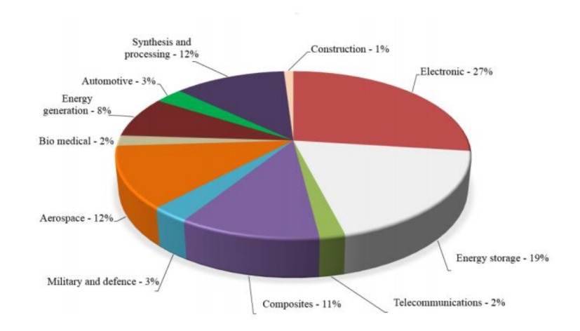

Nanotechnology is rapidly transforming modern engineering by enabling the creation of smaller, faster, and more highly-tailored devices.
Electronics & Data Storage
- Nanoscale Transistors: The miniaturization of electronic components using CNT transistors allows for higher-performance electronics with vastly improved energy efficiency.
- Magnetic Data Storage: Nanotechnology has revolutionized data drives by enabling high-density, ultra-compact storage devices with increased data capacity.
Energy Systems
- Energy Storage: Nanostructured materials (like nanoparticles, nanowires, and nanorods) significantly enhance the charge storage capacity of battery electrodes. Furthermore, porous CNT and graphene-based electrodes are used to build next-generation Supercapacitors.
- Energy Harvesting: Nanomaterials are heavily utilized in Photovoltaic (solar) cells. For instance, SWCNT/n-Si heterojunction solar cells utilize strong photoabsorption (from IR to UV), high carrier mobility, and shorter carrier transport lengths to increase efficiency.

Surface Engineering
Engineers mimic natural properties like the Lotus effect to engineer advanced surfaces. By creating a PTFE coated CNT forest, engineers can create synthetic superhydrophobic surfaces that aggressively repel water.
Practice Exercises
Test your knowledge on Industrial Applications.
1. How has nanotechnology improved electronic transistors?
A) It made them physically larger to handle more current
B) It enabled miniaturization for higher performance and better energy efficiency
C) It eliminated the need for semiconductors
2. What specific nanomaterial structure is commonly used to build the electrodes in high-performance Supercapacitors?
A) Solid blocks of bulk silicon
B) Smooth ceramic plates
C) Porous CNT or graphene-based materials
3. How do nanostructured materials (like nanowires) improve battery electrodes?
A) They significantly enhance charge storage capacity
B) They increase the weight of the battery for stability
C) They act as an electrical insulator to prevent short circuits
4. In solar energy harvesting, what advantage do SWCNT/n-Si heterojunction cells provide?
A) They reflect UV light to keep the panel cool
B) Strong photoabsorption, high carrier mobility, and shorter carrier transport lengths
C) They require zero sunlight to generate power
5. What engineering application directly mimics the natural Lotus leaf effect?
A) Gecko adhesive pads
B) Superhydrophobic surfaces (e.g., PTFE coated CNT forests)
C) Magnetic data storage drives